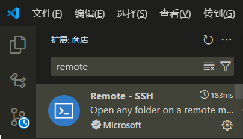
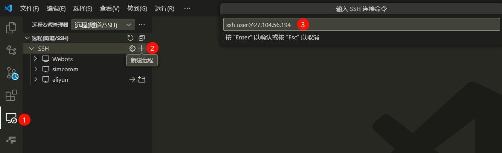
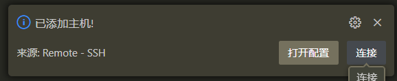
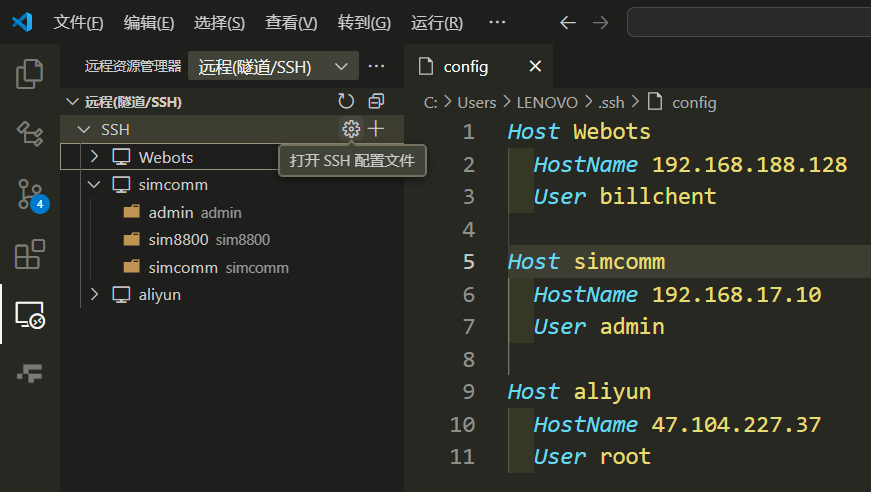
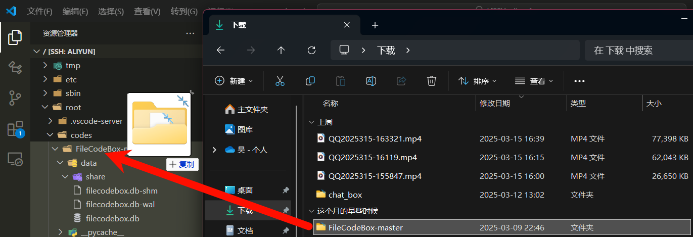
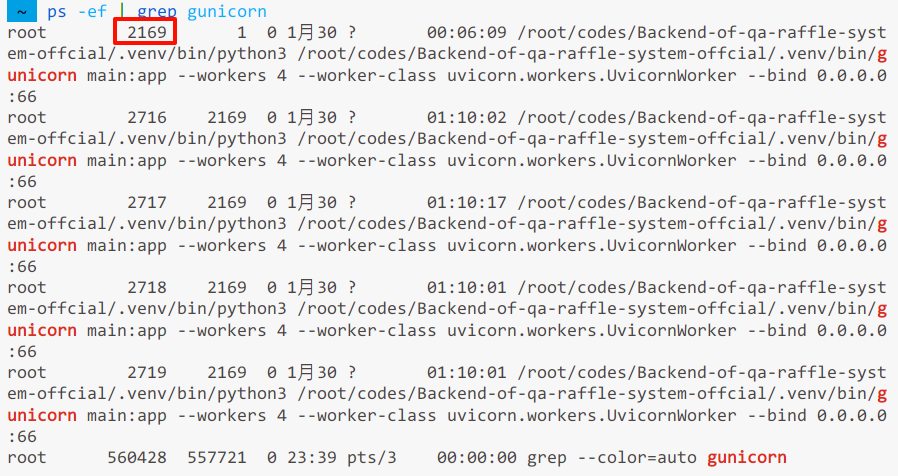
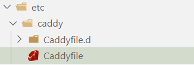
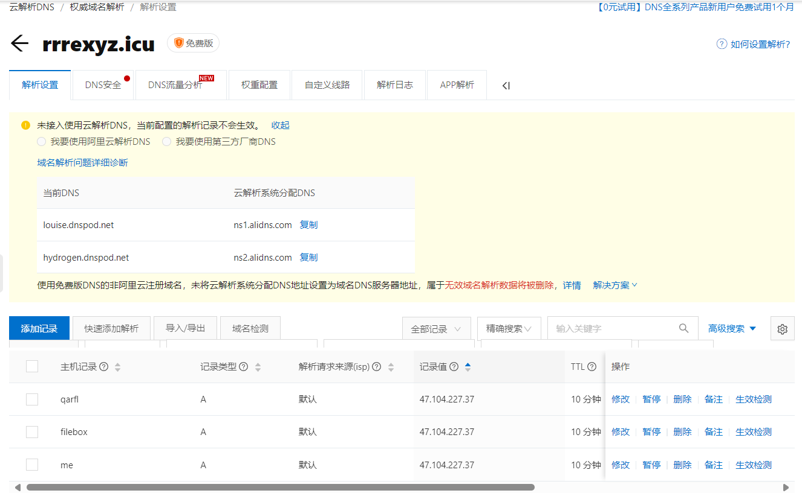
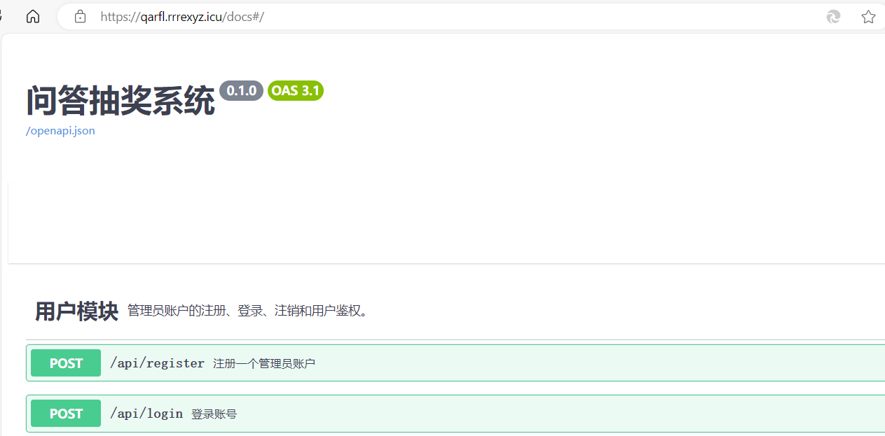

FastAPI应用部署到服务器指南
前置条件
你有一台具有公网IP地址的（云）服务器，并已经安装了Linux 操作系统，如Ubuntu、CentOS等。除此之外，一般还需要有一个解析到该服务器的域名。然后可能还需要在服务器上开放SSH远程连接的端口（这个好像一般都是默认配好的）。
小问题
如果你的云服务器是国内运营商提供的，那么将域名解析到该服务器后还需要进行ICP备案才能正常访问。
将FastAPI项目代码上传到服务器端
所谓“部署”到服务器，实际上就是把FastAPI应用在服务器端运行起来，所以第一步自然就是把FastAPI项目代码上传到服务器上。那么应该如何上传呢？一般来说服务器上安装的都是Server 版的Linux 操作系统，只有一个黑窗口，并不能直接与Windows 系统交互进行文件传输。想要打破次元壁，可以采取下面几种方法：
通过GitHub进行中转
将本地的代码上传到GitHub仓库，然后在服务器上用
| Bash | |
|---|---|
这是最简单直接的方式，并且如果后续我们在本地又修改了代码，那么在服务器上也可以直接用
| Bash | |
|---|---|
不过众所周知GitHub经常需要科学上网才能访问，如果你的服务器是国内的，那很可能连不上GitHub（我就是😭）。解决方法当然就是在服务器上安装翻墙工具，不过在Linux 上相关配置可能会比较复杂，像我这样的懒人就直接放弃折腾了，毕竟我们还有后面的上传方案，是吧？
通过SSH远程连接服务器并借助图形化界面实现文件拖动上传
首先需要确保服务器上开放了22端口（SSH远程连接默认端口），可以通过
| Bash | |
|---|---|
如果并未开放的话，运行
| Bash | |
|---|---|
然后在VSCode 中安装Remote-SSH插件。 
打开远程资源管理器，点"+"按钮添加SSH 远程主机，格式是ssh <username>@<hostname>，输入完点确定。

然后点击右下角弹出的窗口中的连接按钮，输入密码后就可以连接到服务器了。 
连接后VSCode 会刷新界面，此时默认不会打开任何文件和文件夹。可以在界面左上角点击文件->打开文件夹，然后可以选择进入服务器中的任何目录。
此外也可以点击这个齿轮按钮进入SSH 配置文件，刚刚通过"+"号添加的SSH 远程主机就会出现在这里面，可以手动修改相关信息。 
这里面有3个参数：
- Host：主机名，可以随便取，但不能重复
- HostName：服务器IP地址
- User：远程连接时使用的用户名
通过SSH 远程连接服务器后，你可以直接把Windows 系统资源管理器中的文件拖动到VSCode 左边的资源管理器中，从而实现文件上传。 
小技巧
相应地，此时VSCode 左边的资源管理器中的所有文件右键单击后会有一个“下载”选项，这个选项可以把文件从服务器下载到本地。
安装 Gunicorn 和 Uvicorn
在服务器端以生产环境的模式运行FastAPI 应用，和在Windows 本地以开发环境的模式运行略有不同，这里推荐使用Gunicorn with Uvicorn Workers的部署方式。
运行
| Bash | |
|---|---|
运行 Gunicorn
接下来你可以通过以下命令运行Gunicorn:
| Bash | |
|---|---|
main:app是你的FastAPI 应用的入口点，--workers是工作进程数量，--worker-class是工作进程类型，--bind是绑定的IP地址和端口。这里面需要注意的是最后的bind参数，IP地址必须是0.0.0.0，端口则可以任意选择（只要不是被占用即可），并且不建议使用80端口，因为80端口是HTTP协议的默认端口，可能会与其他服务冲突。对应地，22端口（SSH远程连接默认端口）和443端口（HTTPS协议默认端口）也不建议使用。
运行Gunicorn 后，你的FastAPI 应用就已经暴露到公网上了，此时可以通过<IP地址>:<端口>访问到你的应用。
注意
由于这里使
gunicorn命令运行项目，而不是直接以main.py为入口执行Python 脚本，因此写在if __name__ == '__main__':代码块中的代码不会被执行，请将原本置于其中的代码移到外面以保证正常执行。
但此时你将会发现一旦使用Ctrl+C关闭上面的进程或者直接退出SSH 连接，你的FastAPI 应用就会停止运行。想要让进程能够自动保活，可以采取下面的方法：
使用Docker部署FastAPI应用
这是比较专业的部署方式，具有很高的可靠性。但缺点是配置非常麻烦，而且在低配的服务器上（我们白嫖的一般都是最低配的）可能会出现性能问题，没有办法流畅运行。所以对于简单的小项目一般还是建议使用下面的方法。（其实是因为我还不会用Docker 😂）
使用nohup命令（推荐）
这是比较简单粗暴的方法。
使用nohup命令可以将进程放入后台运行，并且在退出SSH 连接后，进程依然能够保持运行。
运行
| Bash | |
|---|---|
&是将进程放入后台运行的命令。
以该方式运行会在你的项目根目录下生成一个nohup.out 文件，里面记录的是运行日志，也就是之前直接运行时在终端中看到的输出内容。
此时可以用
| Bash | |
|---|---|

我们开了4个工作进程，所以这里会显示4个，但实际上后面3个都是第1个子进程。
想要结束该进程，可以用
| Bash | |
|---|---|
<进程号>是上一步中显示的进程号（第一个）。
然后再运行ps -ef | grep gunicorn命令，可以看到已经没有任何进程了。
注意
如果你对项目中的代码进行了修改，那么必须要先结束现有的Gunicorn 进程，然后再重新运行，才能看到修改后的效果。
用Caddy 做反向代理
这部分可以去看看Caddy的官方文档。懒得看的话，就按下面的省流版来吧～
安装Caddy
安装稳定版本的Caddy：
配置Caddy 代理
安装完成后会生成/etc/caddy目录，里面有Caddy的配置文件Caddyfile（如果没有的话自己创建一个）。 
在Caddyfile中添加以下内容：
其中运行端口是你在执行| Bash | |
|---|---|
域名就是你挂载到服务器上的域名，当然像这样的后端服务一般都会代理到一个子域名上。
一般来说购买域名时获得的都是二级域名，例如rrrexyz.icu，在服务器的管理面板中可以将其子域名解析到你的服务器IP上。

注意
子域名解析后一般需要过十几分钟到几小时才会生效，所以如果你的域名还没有解析成功，请耐心等待。
比如说我就把问答抽奖系统的后端服务反向代理到了qarfl.rrrexyz.icu这个子域名上，配置文件中的写法是：
添加完毕保存文件后，需要执行以下命令使配置生效：
| Bash | |
|---|---|
可以用
| Bash | |
|---|---|
随后，Caddy会自动帮我们申请配置好SSL证书，我们可以通过https://<你的域名>访问到对应的FastAPI应用。
